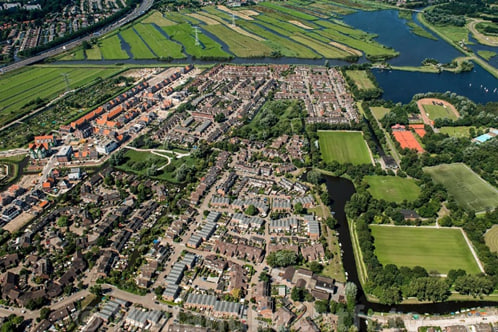
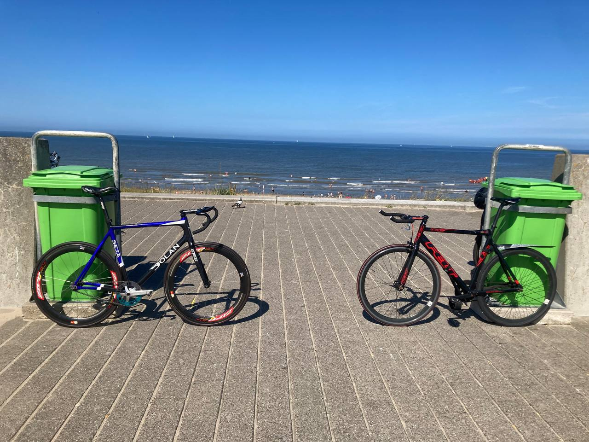

Yevhen Tiutiunnyk
Ik ben 17 jaar oud. Twee jaar geleden heb ik naar Nederland gekomen.
Ik kom uit Oekraїne. Nu studeer ik bij Media College.
Ik wil een goede gameontwikkelaar worden.
Dan wil ik graag bij een goede bedrijf gaan werken.
Mijn woonplaats
Ik woon in Landsmeer. Het is echt mooie plaats. Hier wonen echt aardige en vriendelijke mensen. Ik woon met mijn moeder en met mijn neef. Ik hou van de natuur van dit stad. etc
In mijn vrije tijd..

In mijn vrije tijd ben ik graag buiten. Ik fiets graag. Elk weekend ga ik naar verschillende
steden
op mijn fiets. Ook hou ik van basketballen. Ik heb twee jaar in Oekraїne professioneel basketbal
gespelt.
Ik hou van biljart. Ik speel biljart twee of drie keer per week. Ik hou van alle sporten!
Wat kan ik al
Ik ben goed in basketballen!
Ik heb twee gouden medailles van.
Ik kan heel goed biljart spelen.
Ik ben een kei in shooter computergames zoals Counter-Strike en Valorant.
Ik kan goed koken.
Ik ben goed in tekenen ook.
Mijn top 10 CS:GO players:
- S1mple
- ZywOo
- Niko
- Monesy
- B1t
- YEKINDAR
- Hobbit
- electroNik
- Ax1Le
- Jame